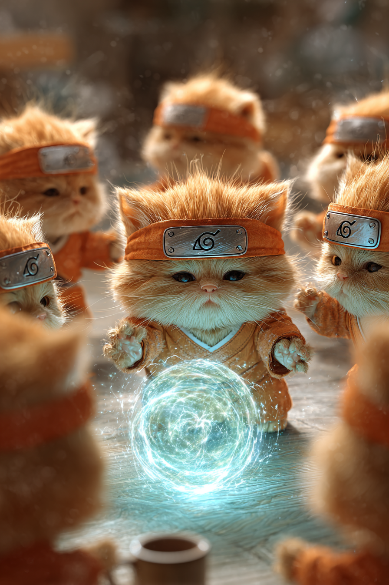
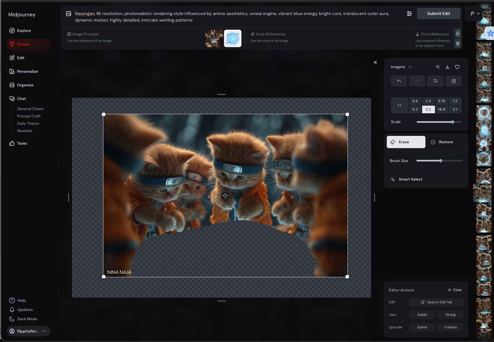
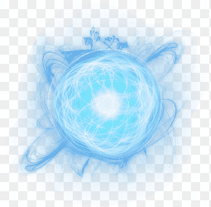
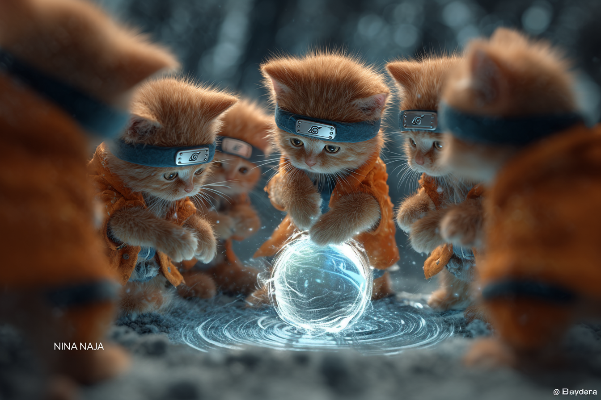

Step 1: Copy & Optimize Your Prompt
Start by copying any Midjourney prompt or writing a simple idea. Paste it into our optimizer to get a structured, detailed version that gives the AI clear instructions.
Original Prompt:
Seven palm-sized golden orange tabby kittens in detailed bright orange ninja outfits forming a dramatic ninja circle... Cinematic lighting, anime-inspired Rasengan scene, epic vibe.

Optimized Prompt:
Foreground: Seven palm-sized golden orange tabby kittens...
Midground: A swirling sphere of blue-white energy...
Background: A subtly blurred, out-of-focus background...
Style: Photorealistic, cinematic lighting...
Midground: A swirling sphere of blue-white energy...
Background: A subtly blurred, out-of-focus background...
Style: Photorealistic, cinematic lighting...
Step 2: Edit with Precision
Isolate elements you want to change using Midjourney's "Vary (Region)" tool. You can feed it a focused prompt to adjust that specific area, or generate a new asset on a transparent background to include in your edit.
Asset Generation Prompt:
Rasengan, 8k resolution, photorealistic rendering style influenced by anime aesthetics, unreal engine, vibrant blue energy, bright core, translucent outer aura, dynamic motion, highly detailed, intricate swirling patterns.



Step 3: Rerun and Refine
Combine your original prompt, any edited references, and new assets to rerun the main scene. This integrates all your changes for a perfect final render. This process is about using AI as a tool to bring your specific vision to life.